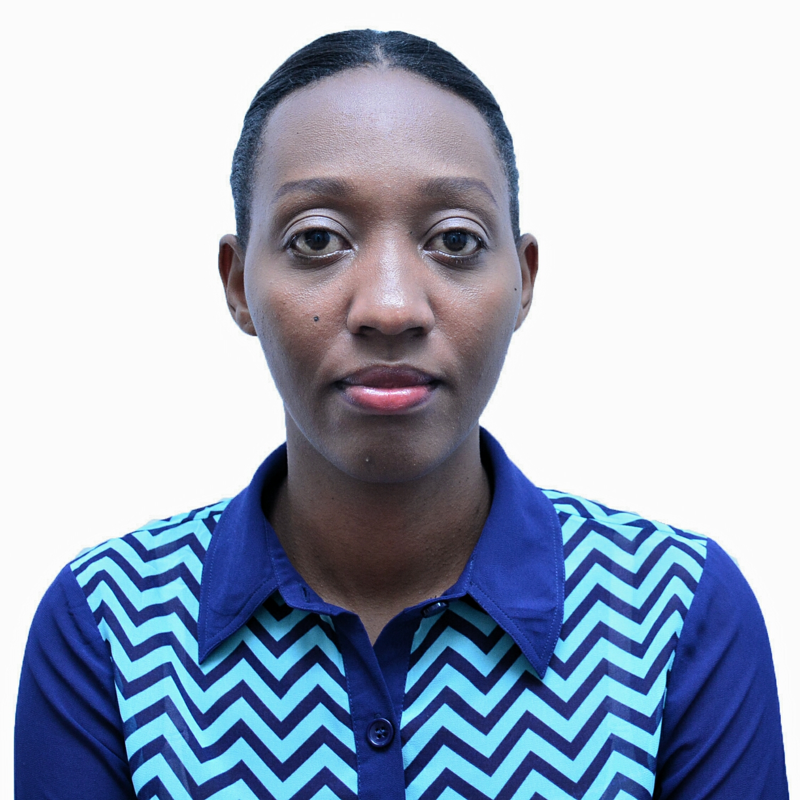

UMUTONI Jacqueline
My names are Jacqueline UMUTONI as it is indicated above, i'm Rwandese, i leave in Nyarugende District and i have 2 siblings. i like programming and i am ready to attend any course it because i want to become a Software Engineer.

The Projects i have done
- The first project i made is Spoc Poject
- .This project is about the supermarket.
- .All products that a supermarket requires are included.
- .It also has all the services a supermarket requires.
- .And then the contacts that a customer may need to contuct us.
- .I used HTML and CSS Languages.
- The second project i did is about My first web page
- .This one is about the content that we are going to learn in Moringa School prep.
- .Here is used HTML only.
- the following project i created is called My Favorite Things
- .This project is about the things i like to do daily.
- .It contains a list of my favorite things.
- .In this project i used HTML only.
- The last project i did is about Dogs and is called pet website
- .This project is about Dogs animal.
- .It has their favorite toys.
- .It also has their favorite activities.
- .In this project i aslo used HTML Language.
About me
In this Section you are going to know me very well. it includes my background, job experience and contacts information.
Background
Education
- Primary School: APADE.
- From 1998 to 2003.
- Secondary School: College Adventiste de Gitwe.
- In Mathematics Physics and Geography(MPG).
- From 2004 to 2009.
- University: Administrative Managment College(AMC).
- In Computer Science.
- From 2010 to 2013.
Job Experience
- Sports 4 Africa Rwanda.
- Duration: February 2013- March2017.
- Position: Sales Supervisor.
Contacts
- Phone : 0787683456
- Email :Jacquelineumutoni13@gmail.com
- District: Nyarugenge
The reason why i decided to take a class on programming is because i wanted to know about programming very well and use it in Rwandan society or anywhere in the world to solve problems and to have more skills.
Interests
- Doing programming.
- Working in a group.
- Doing research on on the things i may not know.
- Knowing my family's news.
Hobbies
- I like to whatch soccer.
- I like to go to church.
- Doing sport.
- Having fun with my friends.
Skills
- Programming Languages
- html
- css
- JavaSript
- Markdown
- Spoken Languages
- English
- French
- Kinyarwanda